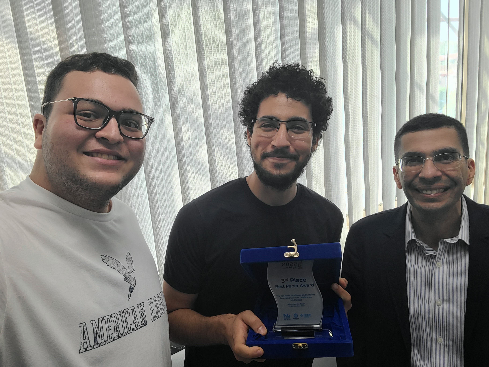
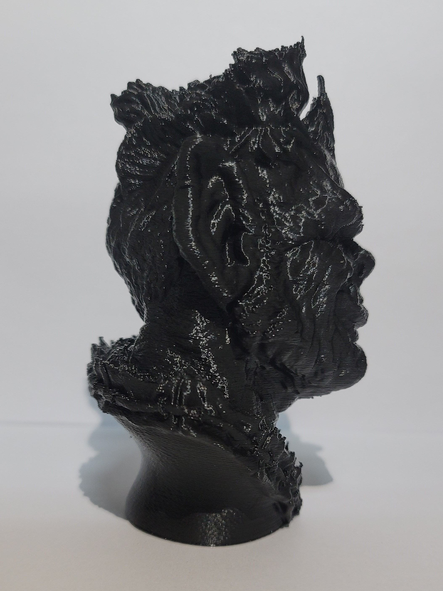
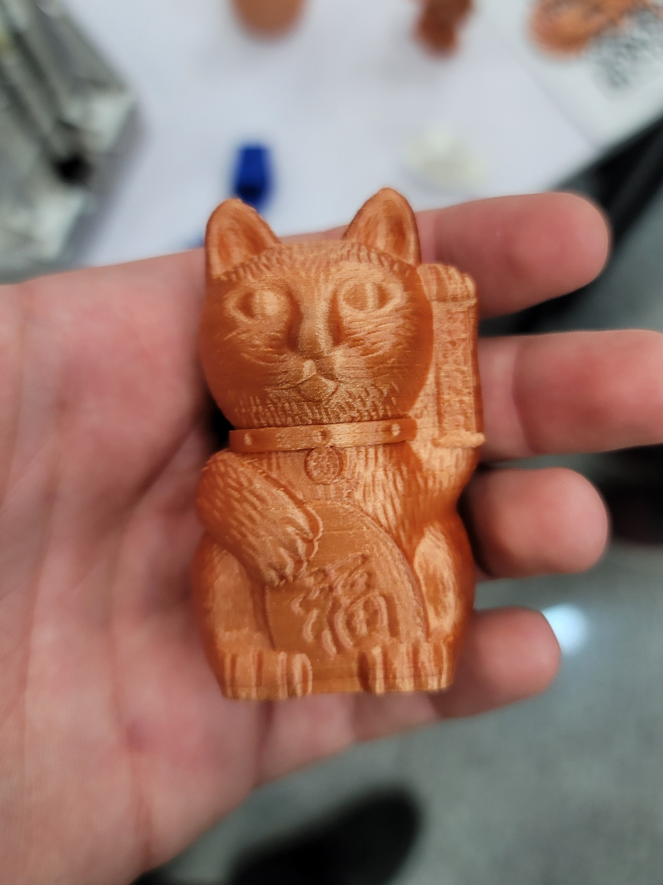

Origin
The idea for Luna originated after my bachelor's thesis, titled "Trajectory Tracking Control of a 3 Degree of Freedom Magnetic Robotic System." The goal was to model the kinematics and dynamics of a novel Delta parallel robot and apply different control laws to compare their performance. This introduced me to parallel robotics, and I was completely fascinated by them. The study was then published at the IEEE 4th Novel Intelligent and Leading Emerging Sciences Conference (NILES) and received the 3rd Best Paper Award. The published paper was written with my thesis teammate, Mohammad, and under the supervision of Prof. Dr. Ayman El-Badawy. You can read the paper here.

From left to right: Myself, my teammate Mohammad, and Prof. Dr. Ayman El-Badawy
This inspired me to begin working on Luna in July 2022, right after my bachelor's thesis. Below is a more detailed look at how Luna came to life and gives an insight into how it all came together.

Design
Luna is a Delta printer. The name Delta originates from its upside-down triangular shape. The first step was to design the triangular frame. The most important aspect of the Delta's frame is that the three towers should be 120 degrees apart to ensure squareness when the printer moves. After that, I spent weeks of research regarding the motion system andd concluded that a belt-driven linear rod system would be ideal. Belt-driven linear rod systems provide superb accuracy when properly tensioned and lubricated while allowing the printer to reach very high speeds compared to the common cartesian printers. With the frame and motion system done, I scaled down the dimensions of the arms and end effector from my thesis study to fit my frame, and with that, the basic design was complete. The rest of the design process required measuring component dimensions and integrating those within the design to have a final design for the printer.

Assembly
The components of the printer are pretty basic and, luckily, were easily found in the Egyptian market when I was building Luna. The frame was cut from a sheet of stainless steel that was then bent and welded. The linear rods are hard chrome. Three stepper motors and their drivers control the motion system. A fourth stepper motor, a hotend, and a heatbed are purchased for feeding and melting the filament, and an Arduino Mega with a RAMPS 1.4 board controls the whole operation. All of this is powered by a 12V, 30A power supply unit (PSU).

Software
Luna uses a modified version of Marlin for its firmware. The firmware sets up all the functionality we need in order to run the Delta robot as a 3D printer. Additionally, Luna uses PrusaSlicer to slice models, which turns the 3D models that you want to print into machine code that the Arduino can process and control each component accordingly.
Demo
This is a timelapse of a super-high-detail print, where Luna is printing at 125 mm/s (2.5 times faster than commercial cartesian printers). Character model by Ben Dansie.



Print Gallery


